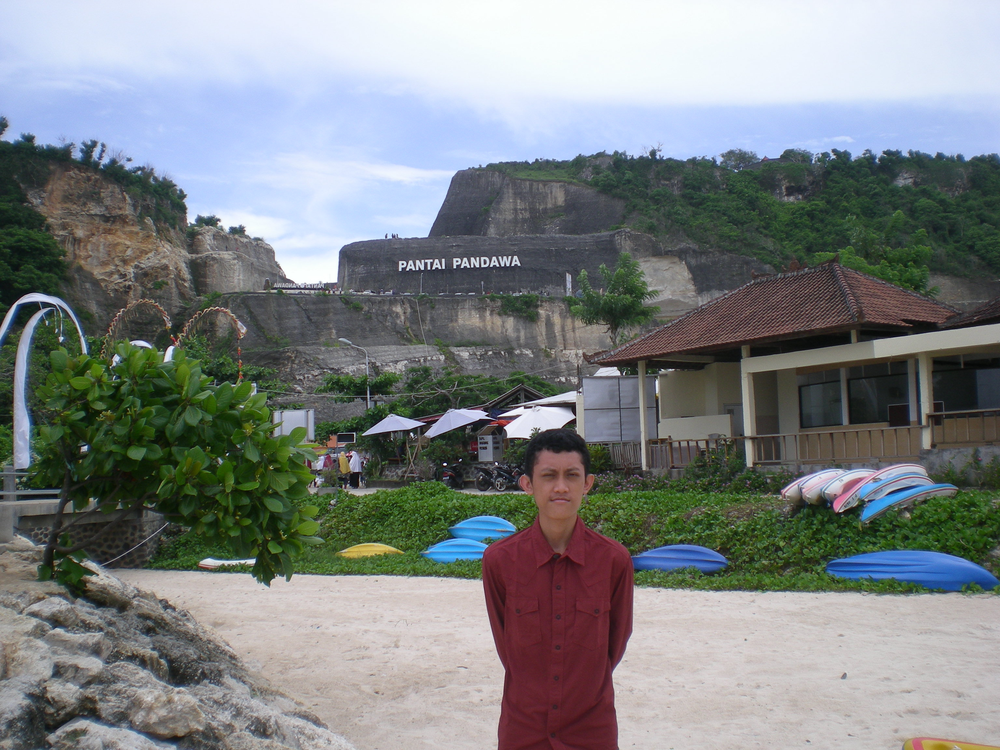

Tentang Saya
Namaku Ivqonnada Al Mufarrih, Aku lahir di suatu kota terpencil di Nusa Tenggara Timur, Atambua, itulah namanya. Aku merupakan keturunan Jawa tepatnya Jawa Timur di kota Blitar, ini dari Ayahku, dan Sulawesi tepatnya Sulawesi Selatan di sebuah kota kecil bernama Tanru Tedong, tentu ini dari Ibuku. Entah bagaimana mereka bertemu di Atambua yang kemudian menghasilkan “Aku”. Aku tak memiliki saudara kandung, yap, aku adalah anak tunggal. Oh ya, aku lahir di Atambua pada tanggal 20 Juli 1998. Sejak kecil aku biasa dipanggil Ivqon.

Diri kecilku tumbuh di sebuah panti asuhan, waktu itu keluargaku lah yang ditunjuk untuk mengelola tempat itu. Kemudian hidupku berpindah-pindah dari suatu kota ke kota lain dari suatu pulau ke pulau lain, ini karena pekerjaan Ayahku sebagai seorang pegawai negeri sipil atau lebih dikenal dengan sebutan PNS yang dituntut untuk berpindah-pindah dari suatu daerah ke daerah yang lain. Dalam masa nomaden ku ini, Aku menemukan berbagai macam teman dengan keberagaman budaya yang mereka miliki.